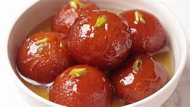

Soft milk-solid dumplings fried to golden perfection and soaked in a warm, fragrant rose-cardamom sugar syrup. India's most cherished sweet!
Gulab Jamun is one of India's most iconic and beloved desserts, served at weddings, festivals, and celebrations across the country. Made from khoya (reduced milk solids) mixed with a little flour, shaped into smooth balls, and deep-fried until golden brown, they are then soaked in a fragrant sugar syrup infused with cardamom, rose water, and saffron. Served warm or at room temperature, these melt-in-your-mouth dumplings are the very essence of Indian festive cooking. Their syrup-soaked softness and floral aroma make them simply unforgettable.
Prepare the sugar syrup: dissolve sugar in water over medium heat, add cardamom pods, rose water, and a few saffron strands. Simmer for 5 minutes until slightly sticky. Keep warm.
In a bowl, combine khoya, all-purpose flour, a pinch of baking soda, and a little milk. Knead gently into a smooth, soft dough — do not over-knead.
Divide the dough into small equal portions and roll each into a smooth ball without any cracks on the surface.
Heat oil or ghee in a deep pan over low to medium heat. Fry the dough balls in batches, stirring gently, until evenly golden brown all over (about 8–10 minutes).
Remove the fried balls and immediately transfer them into the warm sugar syrup. Let them soak for at least 30 minutes.
Serve warm or at room temperature, garnished with chopped pistachios or rose petals. They taste even better the next day!